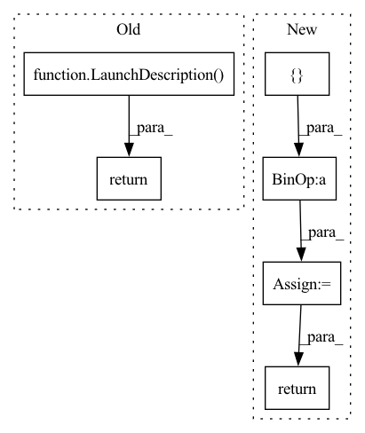

Pattern ID :9006

Before Change
output="screen",
)
return LaunchDescription([
rclcpp_container,
Node(name="centerpose_decoder_node", package="isaac_ros_centerpose",
executable="CenterPoseDecoder", parameters=[config], output="screen")])
After Change
output="screen"
)
final_launch_container = launch_args + \
[rclcpp_container] + [dope_decoder_node]
return LaunchDescription(final_launch_container)
In pattern: SUPERPATTERN
Frequency: 3
Non-data size: 6
Instances
Fragment ID: 32868093
Project Name: nvidia-isaac-ros/isaac_ros_pose_estimation
Commit Name: a6ad6e5eae07bc176a918da89e0d4088102f06ee
Time: 2022-06-30
Author: jaiveers@nvidia.com
File Name: isaac_ros_centerpose/launch/isaac_ros_centerpose.launch.py
M Class Name: AnonimousClass
N Class Name: AnonimousClass
M Method Name: generate_launch_description(0)
N Method Name: generate_launch_description(0)
M Parent Class:
N Parent Class:
M File Name: isaac_ros_centerpose/launch/isaac_ros_centerpose.launch.py
N File Name: isaac_ros_centerpose/launch/isaac_ros_centerpose.launch.py
M Start Line: 19
M End Line: 69
N Start Line: 21
N End Line: 147
'>
Before Change
output="screen",
)
return LaunchDescription([container])
After Change
def generate_launch_description():
Generate launch description for DOPE encoder->Triton->DOPE decoder.
launch_args = [
DeclareLaunchArgument(
"network_image_width",
default_value="640",
description="The input image width that the network expects"),
DeclareLaunchArgument(
"network_image_height",
default_value="480",
description="The input image height that the network expects"),
DeclareLaunchArgument(
"encoder_image_mean",
default_value="[0.5, 0.5, 0.5]",
description="The mean for image normalization"),
DeclareLaunchArgument(
"encoder_image_stddev",
default_value="[0.5, 0.5, 0.5]",
description="The standard deviation for image normalization"),
DeclareLaunchArgument(
"model_name",
default_value="",
description="The name of the model"),
DeclareLaunchArgument(
"model_repository_paths",
default_value="",
description="The absolute path to the repository of models"),
DeclareLaunchArgument(
"max_batch_size",
default_value="0",
description="The maximum allowed batch size of the model"),
DeclareLaunchArgument(
"input_tensor_names",
default_value="["input_tensor"]",
description="A list of tensor names to bound to the specified input binding names"),
DeclareLaunchArgument(
"input_binding_names",
default_value="["input_1"]",
description="A list of input tensor binding names (specified by model)"),
DeclareLaunchArgument(
"input_tensor_formats",
default_value="["nitros_tensor_list_nchw_rgb_f32"]",
description="The nitros format of the input tensors"),
DeclareLaunchArgument(
"output_tensor_names",
default_value="["output_tensor"]",
description="A list of tensor names to bound to the specified output binding names"),
DeclareLaunchArgument(
"output_binding_names",
default_value="["softmax_1"]",
description="A list of output tensor binding names (specified by model)"),
DeclareLaunchArgument(
"output_tensor_formats",
default_value="["nitros_tensor_list_nhwc_rgb_f32"]",
description="The nitros format of the output tensors"),
DeclareLaunchArgument(
"object_name",
default_value="Ketchup",
description="The object class that the DOPE network is detecting"),
]
// DNN Image Encoder parameters
network_image_width = LaunchConfiguration("network_image_width")
network_image_height = LaunchConfiguration("network_image_height")
encoder_image_mean = LaunchConfiguration("encoder_image_mean")
encoder_image_stddev = LaunchConfiguration("encoder_image_stddev")
// Triton parameters
model_name = LaunchConfiguration("model_name")
model_repository_paths = LaunchConfiguration("model_repository_paths")
max_batch_size = LaunchConfiguration("max_batch_size")
input_tensor_names = LaunchConfiguration("input_tensor_names")
input_binding_names = LaunchConfiguration("input_binding_names")
input_tensor_formats = LaunchConfiguration("input_tensor_formats")
output_tensor_names = LaunchConfiguration("output_tensor_names")
output_binding_names = LaunchConfiguration("output_binding_names")
output_tensor_formats = LaunchConfiguration("output_tensor_formats")
// DOPE Decoder parameters
object_name = LaunchConfiguration("object_name")
dope_encoder_node = ComposableNode(
name="dope_encoder",
package="isaac_ros_dnn_encoders",
plugin="nvidia::isaac_ros::dnn_inference::DnnImageEncoderNode",
parameters=[{
"network_image_width": network_image_width,
"network_image_height": network_image_height,
"image_mean": encoder_image_mean,
"image_stddev": encoder_image_stddev,
}],
remappings=[("encoded_tensor", "tensor_pub")])
dope_inference_node = ComposableNode(
name="dope_inference",
package="isaac_ros_triton",
plugin="nvidia::isaac_ros::dnn_inference::TritonNode",
parameters=[{
"model_name": model_name,
"model_repository_paths": model_repository_paths,
"max_batch_size": max_batch_size,
"input_tensor_names": input_tensor_names,
"input_binding_names": input_binding_names,
"input_tensor_formats": input_tensor_formats,
"output_tensor_names": output_tensor_names,
"output_binding_names": output_binding_names,
"output_tensor_formats": output_tensor_formats,
}])
dope_decoder_node = ComposableNode(
name="dope_decoder",
package="isaac_ros_dope",
plugin="nvidia::isaac_ros::dope::DopeDecoderNode",
parameters=[{
"object_name": object_name,
}],
remappings=[("belief_map_array", "tensor_sub"),
("dope/pose_array", "poses")])
container = ComposableNodeContainer(
name="dope_container",
namespace="",
package="rclcpp_components",
executable="component_container_mt",
composable_node_descriptions=[dope_encoder_node, dope_inference_node, dope_decoder_node],
output="screen",
)
final_launch_description = launch_args + [container]
return launch.LaunchDescription(final_launch_description)
'>
Fragment ID: 32868091
Project Name: nvidia-isaac-ros/isaac_ros_pose_estimation
Commit Name: a6ad6e5eae07bc176a918da89e0d4088102f06ee
Time: 2022-06-30
Author: jaiveers@nvidia.com
File Name: isaac_ros_dope/launch/isaac_ros_dope_triton.launch.py
M Class Name: AnonimousClass
N Class Name: AnonimousClass
M Method Name: generate_launch_description(0)
N Method Name: generate_launch_description(0)
M Parent Class:
N Parent Class:
M File Name: isaac_ros_dope/launch/isaac_ros_dope_triton.launch.py
N File Name: isaac_ros_dope/launch/isaac_ros_dope_triton.launch.py
M Start Line: 18
M End Line: 68
N Start Line: 18
N End Line: 145
'>
Before Change
output="screen",
)
return LaunchDescription([container])
After Change
DEFAULT_MODEL_FILE_NAME = "dope_ketchup_pol.onnx"
default_model_file_path = os.path.dirname(os.path.abspath(
__file__)) + "/../../test/models/" + DEFAULT_MODEL_FILE_NAME
launch_args = [
DeclareLaunchArgument(
"network_image_width",
default_value="640",
description="The input image width that the network expects"),
DeclareLaunchArgument(
"network_image_height",
default_value="480",
description="The input image height that the network expects"),
DeclareLaunchArgument(
"model_file_path",
default_value=f"{default_model_file_path}",
description="The absolute file path to the ONNX file"),
DeclareLaunchArgument(
"engine_file_path",
default_value="/tmp/trt_engine.plan",
description="The absolute file path to the TensorRT engine file"),
DeclareLaunchArgument(
"input_tensor_names",
default_value="["input_tensor"]",
description="A list of tensor names to bound to the specified input binding names"),
DeclareLaunchArgument(
"input_binding_names",
default_value="["input"]",
description="A list of input tensor binding names (specified by model)"),
DeclareLaunchArgument(
"input_tensor_formats",
default_value="["nitros_tensor_list_nchw_rgb_f32"]",
description="The nitros format of the input tensors"),
DeclareLaunchArgument(
"output_tensor_names",
default_value="["output"]",
description="A list of tensor names to bound to the specified output binding names"),
DeclareLaunchArgument(
"output_binding_names",
default_value="["output"]",
description="A list of output tensor binding names (specified by model)"),
DeclareLaunchArgument(
"output_tensor_formats",
default_value="["nitros_tensor_list_nhwc_rgb_f32"]",
description="The nitros format of the output tensors"),
DeclareLaunchArgument(
"tensorrt_verbose",
default_value="False",
description="Whether TensorRT should verbosely log or not"),
DeclareLaunchArgument(
"object_name",
default_value="Ketchup",
description="The object class that the DOPE network is detecting"),
DeclareLaunchArgument(
"force_engine_update",
default_value="False",
description="Whether TensorRT should update the TensorRT engine file or not"),
]
// DNN Image Encoder parameters
network_image_width = LaunchConfiguration("network_image_width")
network_image_height = LaunchConfiguration("network_image_height")
// Tensor RT parameters
model_file_path = LaunchConfiguration("model_file_path")
engine_file_path = LaunchConfiguration("engine_file_path")
input_tensor_names = LaunchConfiguration("input_tensor_names")
input_binding_names = LaunchConfiguration("input_binding_names")
input_tensor_formats = LaunchConfiguration("input_tensor_formats")
output_tensor_names = LaunchConfiguration("output_tensor_names")
output_binding_names = LaunchConfiguration("output_binding_names")
output_tensor_formats = LaunchConfiguration("output_tensor_formats")
tensorrt_verbose = LaunchConfiguration("tensorrt_verbose")
force_engine_update = LaunchConfiguration("force_engine_update")
// DOPE Decoder parameters
object_name = LaunchConfiguration("object_name")
dope_encoder_node = ComposableNode(
name="dope_encoder",
package="isaac_ros_dnn_encoders",
plugin="nvidia::isaac_ros::dnn_inference::DnnImageEncoderNode",
parameters=[{
"network_image_width": network_image_width,
"network_image_height": network_image_height,
}],
remappings=[("encoded_tensor", "tensor_pub")])
dope_inference_node = ComposableNode(
name="dope_inference",
package="isaac_ros_tensor_rt",
plugin="nvidia::isaac_ros::dnn_inference::TensorRTNode",
parameters=[{
"model_file_path": model_file_path,
"engine_file_path": engine_file_path,
"input_tensor_names": input_tensor_names,
"input_binding_names": input_binding_names,
"input_tensor_formats": input_tensor_formats,
"output_tensor_names": output_tensor_names,
"output_binding_names": output_binding_names,
"output_tensor_formats": output_tensor_formats,
"verbose": tensorrt_verbose,
"force_engine_update": force_engine_update
}])
dope_decoder_node = ComposableNode(
name="dope_decoder",
package="isaac_ros_dope",
plugin="nvidia::isaac_ros::dope::DopeDecoderNode",
parameters=[{
"object_name": object_name,
}],
remappings=[("belief_map_array", "tensor_sub"),
("dope/pose_array", "poses")])
container = ComposableNodeContainer(
name="dope_container",
namespace="",
package="rclcpp_components",
executable="component_container_mt",
composable_node_descriptions=[dope_encoder_node, dope_inference_node, dope_decoder_node],
output="screen",
)
final_launch_description = launch_args + [container]
return launch.LaunchDescription(final_launch_description)
'>
Fragment ID: 32868090
Project Name: nvidia-isaac-ros/isaac_ros_pose_estimation
Commit Name: a6ad6e5eae07bc176a918da89e0d4088102f06ee
Time: 2022-06-30
Author: jaiveers@nvidia.com
File Name: isaac_ros_dope/launch/isaac_ros_dope_tensor_rt.launch.py
M Class Name: AnonimousClass
N Class Name: AnonimousClass
M Method Name: generate_launch_description(0)
N Method Name: generate_launch_description(0)
M Parent Class:
N Parent Class:
M File Name: isaac_ros_dope/launch/isaac_ros_dope_tensor_rt.launch.py
N File Name: isaac_ros_dope/launch/isaac_ros_dope_tensor_rt.launch.py
M Start Line: 32
M End Line: 67
N Start Line: 20
N End Line: 144